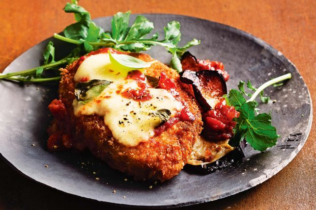

Chicken Parmigiana Recipe

Easy And Simple Chicken Parmigiana Recipe.
Is there anything better than crispy, golden crumb-coated chicken topped with a rich tomato sauce and gooey melted cheese?
Ingredients
- 4 Chicken Breasts, excess fat trimmed
- 140g (2 cups) panko breadcrumbs
- 2 eggs, lightly whisked
- 2 tbsp plain flour
- 125ml (1/2 cup) light extra virgin olive oil
- 1 (about 350g) eggplant, cut into 1cm-thick slices
- 8 large fresh basil leaves, torn
- 180g ctn bocconcini, drained, thickly sliced
- 1 tbsp extra virgin olive oil
- 1 brown onion, finely chopped
- 2 garlic cloves, crushed
- 700g bottle tomato passata
Steps
- Place each chicken fillet between 2 sheets of plastic wrap. Use a mallet or rolling pin to gently pound the thickest part of the chicken until the fillets are an even thickness. Place breadcrumbs in a dish.
- Place egg in a bowl. Place flour on a plate. Season. Coat fillets in flour. Shake off excess. Coat in egg. Coat in breadcrumbs, pressing firmly to stick. Transfer to a tray. Cover. Place in the fridge for 30 minutes to set.
- Meanwhile, heat 2 tablespoons oil in a frying pan over medium-high heat. Add a third of the eggplant. Cook for 2-3 minutes each side until golden. Drain on paper towel. Repeat in 2 batches, adding a little extra oil as needed.
- For the sauce, heat oil in a frying pan over medium heat. Add onion. Cook, stirring, for 5 minutes or until soft. Stir in garlic for 1-2 minutes or until aromatic. Add passata. Cook, stirring, for 15 minutes or until thickened.
- Preheat oven to 180C/160C fan forced. Heat remaining oil in a large frying pan over medium-high heat. Cook schnitzels, in 2 batches, for 2 minutes each side or until golden. Drain on paper towel.
- Place half the sauce in a roasting pan. Top with eggplant and chicken. Drizzle with remaining sauce. Sprinkle with basil and top with bocconcini. Bake for 15 minutes or until melted and golden.